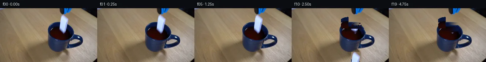

![首帧]()

Round 00
2026-11-05T12:21:24.251063+00:00像素候选变化代码 +267/−0inspection 更新
pixels bba18c83f6e16991 · code 9344f43b77366dd8
查看本轮 generate.py 真实 diff
--- previous/generate.py
+++ current/generate.py
@@ -0,0 +1,267 @@
+#!/usr/bin/env python3
+"""PixelWorld-Text frame generator for case_0046.
+Scene: Blue-black grabber drops white ceramic domino into dark-liquid-filled mug on wood.
+Method: Direct NumPy pixel manipulation with inpaint by row interpolation,
+gravity-based domino drop, grabber retraction, and splash particle effects.
+"""
+import numpy as np
+from PIL import Image
+from pathlib import Path
+import sys
+sys.path.insert(0, str(Path(__file__).parent))
+from artifact_io import save
+
+CASE_DIR = Path(__file__).parent
+H, W = 144, 256
+N_FRAMES = 20
+
+# ── Load first frame ──────────────────────────────────────────────
+orig = np.array(Image.open(CASE_DIR / 'first_frame.png')).astype(np.uint8)
+assert orig.shape == (H, W, 3), f"Expected (144,256,3), got {orig.shape}"
+
+# ── Domino bounding box (measured from first_frame.png) ────────────
+DOMINO_X0, DOMINO_X1 = 157, 179 # 23px wide
+DOMINO_Y0, DOMINO_Y1 = 18, 64 # 47px tall (inclusive)
+DOMINO_H = DOMINO_Y1 - DOMINO_Y0 + 1 # 47
+
+# ── Liquid surface in mug ─────────────────────────────────────────
+LIQUID_SURFACE_Y = 60 # top of dark liquid inside mug
+MUG_RIM_TOP_Y = 55 # top opening of mug
+MUG_RIM_BOTTOM_Y = 85 # bottom of visible mug opening area
+
+# ── Build domino mask ─────────────────────────────────────────────
+domino_mask = np.zeros((H, W), dtype=bool)
+for y in range(H):
+ for x in range(W):
+ r, g, b = int(orig[y,x,0]), int(orig[y,x,1]), int(orig[y,x,2])
+ if (r > 110 and g > 100 and b > r and b > g and (r+g+b) > 360 and
+ x >= DOMINO_X0 - 2 and x <= DOMINO_X1 + 2 and y >= DOMINO_Y0 - 1 and y <= DOMINO_Y1 + 1):
+ domino_mask[y, x] = True
+
+# Tighten: only keep the largest connected region
+domino_pixels = np.where(domino_mask)
+domino_x0, domino_x1 = domino_pixels[1].min(), domino_pixels[1].max()
+domino_y0, domino_y1 = domino_pixels[0].min(), domino_pixels[0].max()
+print(f"Domino bbox: x=[{domino_x0},{domino_x1}] y=[{domino_y0},{domino_y1}]")
+
+# ── Grabber prong masks ───────────────────────────────────────────
+# Left prong: dark pixels immediately left of domino
+left_prong_mask = np.zeros((H, W), dtype=bool)
+for y in range(domino_y0, domino_y1 + 1):
+ for x in range(domino_x0 - 15, domino_x0):
+ r, g, b = int(orig[y,x,0]), int(orig[y,x,1]), int(orig[y,x,2])
+ if r < 60 and g < 40:
+ left_prong_mask[y, x] = True
+
+# Right prong: dark pixels immediately right of domino
+right_prong_mask = np.zeros((H, W), dtype=bool)
+for y in range(domino_y0, domino_y1 + 1):
+ for x in range(domino_x1 + 1, domino_x1 + 15):
+ r, g, b = int(orig[y,x,0]), int(orig[y,x,1]), int(orig[y,x,2])
+ if r < 60 and g < 40:
+ right_prong_mask[y, x] = True
+
+# ── Create clean background plate (inpaint domino region) ──────────
+def create_clean_plate(frame):
+ """Inpaint domino area using horizontal interpolation from sides."""
+ clean = frame.copy()
+ for y in range(domino_y0, domino_y1 + 1):
+ # Sample left side colors
+ lx = domino_x0 - 3
+ rx = domino_x1 + 3
+ if lx >= 0 and rx < W:
+ left_color = clean[y, lx].astype(np.float32)
+ right_color = clean[y, rx].astype(np.float32)
+ for x in range(domino_x0 - 1, domino_x1 + 2):
+ if 0 <= x < W:
+ t = (x - (domino_x0 - 1)) / (domino_x1 + 2 - (domino_x0 - 1))
+ color = left_color * (1 - t) + right_color * t
+ # Add subtle noise to avoid uniform bands
+ noise = np.random.randint(-3, 4, 3).astype(np.float32)
+ clean[y, x] = np.clip(color + noise, 0, 255).astype(np.uint8)
+ return clean
+
+clean_plate = create_clean_plate(orig)
+
+# ── Generate all frames ───────────────────────────────────────────
+frames = np.zeros((N_FRAMES, H, W, 3), dtype=np.uint8)
… diff truncated; 180 more lines …